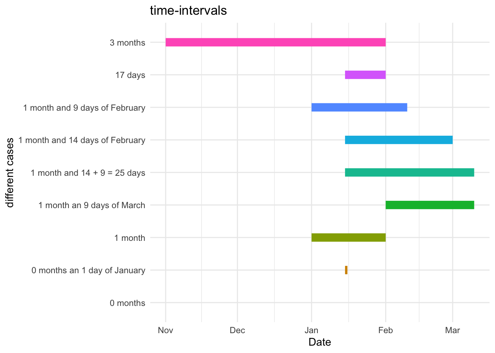

library(data.table)
library(lubridate)
start = as.Date("2025-01-01")
end = as.Date("2025-03-01")
months_between = month(end) - month(start)
months_between[1] 2Thomas Brand
June 9, 2025
In this blog I will show you how you can calculate the number of months between two dates with the lubridate-package. This is quite an easy task, but you have to take into account certain special cases in which you might get a result, that is not quite what you would expect. I will also give you an solution of how you can avoid this problem.
In many cases you have the situation, that you bill a customer on a per month basis, e.g. in a subscription for a service. So any record (i.e. row) has a
startDate which is the first day, that a row is valid and an
endDate which is the first day, that a row isn’t valid any more.
With this in mind you can easily calculate the months between two dates as the difference between the months of your dates if you subtract them.
library(data.table)
library(lubridate)
start = as.Date("2025-01-01")
end = as.Date("2025-03-01")
months_between = month(end) - month(start)
months_between[1] 2In this case it doesn’t matter how many days the month has, i.e. February with its 28 (29) days count as equally as one month as does March with its 31 days.
Apart for the obvious problems with year-changes in this calculation-approach, we will also have to deal with beginnings or endings within a month. This could be because someone started the subscription not on the first of a month or terminated the service before the end of the month, e.g. by right of premature cancellation or just because the person died.
In this cases you can’t bill the customer for the whole month, just for the days he used the service. By definition we will assume that for \(x\) days of service we can bill the customer with \(\frac{x}{dsom}\) of the monthly payment, with \(dsom\) the number of days of the corresponding month.
So, let’s look at several different situations of possible scenarios for calculating the month-with-fractions.
dt = rowwiseDT(start=, end=, expected=, descr=,
"2025-01-01","2025-02-01", 1.0, "1 month",
"2024-11-01","2025-02-01", 3.0, "3 months",
"2025-01-01","2025-02-10", 1 + 9/28, "1 month and 9 days of February",
"2025-01-15","2025-02-01", 17/31, "17 days",
"2025-02-01","2025-03-10", 1 + 9/31, "1 month an 9 days of March",
"2025-01-15","2025-03-01", 1 + 14/28, "1 month and 14 days of February",
"2025-01-15","2025-03-10", 1 + 23/28, "1 month and 14 + 9 = 25 days",
"2025-01-15","2025-01-15", 0, "0 months",
"2025-01-15","2025-01-16", 1/31, "0 months an 1 day of January"
)
dt start end expected descr
<char> <char> <num> <char>
1: 2025-01-01 2025-02-01 1.00000000 1 month
2: 2024-11-01 2025-02-01 3.00000000 3 months
3: 2025-01-01 2025-02-10 1.32142857 1 month and 9 days of February
4: 2025-01-15 2025-02-01 0.54838710 17 days
5: 2025-02-01 2025-03-10 1.29032258 1 month an 9 days of March
6: 2025-01-15 2025-03-01 1.50000000 1 month and 14 days of February
7: 2025-01-15 2025-03-10 1.82142857 1 month and 14 + 9 = 25 days
8: 2025-01-15 2025-01-15 0.00000000 0 months
9: 2025-01-15 2025-01-16 0.03225806 0 months an 1 day of January
To calculate the months we can use the following functions from the lubridate-package
interval to define a date-interval and
time_length to calculate the monts.
Let’s see how this works. First we build the intervals
start end expected descr
<char> <char> <num> <char>
1: 2025-01-01 2025-02-01 1.00000000 1 month
2: 2024-11-01 2025-02-01 3.00000000 3 months
3: 2025-01-01 2025-02-10 1.32142857 1 month and 9 days of February
4: 2025-01-15 2025-02-01 0.54838710 17 days
5: 2025-02-01 2025-03-10 1.29032258 1 month an 9 days of March
6: 2025-01-15 2025-03-01 1.50000000 1 month and 14 days of February
7: 2025-01-15 2025-03-10 1.82142857 1 month and 14 + 9 = 25 days
8: 2025-01-15 2025-01-15 0.00000000 0 months
9: 2025-01-15 2025-01-16 0.03225806 0 months an 1 day of January
interval
<Interval>
1: 2025-01-01 UTC--2025-02-01 UTC
2: 2024-11-01 UTC--2025-02-01 UTC
3: 2025-01-01 UTC--2025-02-10 UTC
4: 2025-01-15 UTC--2025-02-01 UTC
5: 2025-02-01 UTC--2025-03-10 UTC
6: 2025-01-15 UTC--2025-03-01 UTC
7: 2025-01-15 UTC--2025-03-10 UTC
8: 2025-01-15 UTC--2025-01-15 UTC
9: 2025-01-15 UTC--2025-01-16 UTCAs you can see, we didn’t even have to convert the character-dates into actual dates. The interval-function did all this for us.
Then we calculate the months
start end expected descr
<char> <char> <num> <char>
1: 2025-01-01 2025-02-01 1.00000000 1 month
2: 2024-11-01 2025-02-01 3.00000000 3 months
3: 2025-01-01 2025-02-10 1.32142857 1 month and 9 days of February
4: 2025-01-15 2025-02-01 0.54838710 17 days
5: 2025-02-01 2025-03-10 1.29032258 1 month an 9 days of March
6: 2025-01-15 2025-03-01 1.50000000 1 month and 14 days of February
7: 2025-01-15 2025-03-10 1.82142857 1 month and 14 + 9 = 25 days
8: 2025-01-15 2025-01-15 0.00000000 0 months
9: 2025-01-15 2025-01-16 0.03225806 0 months an 1 day of January
interval months
<Interval> <num>
1: 2025-01-01 UTC--2025-02-01 UTC 1.00000000
2: 2024-11-01 UTC--2025-02-01 UTC 3.00000000
3: 2025-01-01 UTC--2025-02-10 UTC 1.32142857
4: 2025-01-15 UTC--2025-02-01 UTC 0.54838710
5: 2025-02-01 UTC--2025-03-10 UTC 1.29032258
6: 2025-01-15 UTC--2025-03-01 UTC 1.50000000
7: 2025-01-15 UTC--2025-03-10 UTC 1.82142857
8: 2025-01-15 UTC--2025-01-15 UTC 0.00000000
9: 2025-01-15 UTC--2025-01-16 UTC 0.03225806As you can see the calculated months for the interval 2025-01-15 to 2025-03-10 (row number 7) are kind of strange in the sense, that the function calculates
one month from 2025-01-15 to 2025-02-15
23 days between 2025-02-15 and 2025-03-10 (which is the correct number of days, by the way); these 23 days will be divided by 28 as the 15th is in the month of February. That will give you 0.8214286
This may not be what you like.
If you expected (as I did), that the interval 2025-01-15 to 2025-03-10 will give you
17/31 for the 17 days of January
1 for the month of February
9/31 for the 9 days of March
giving 1.8387097 you will have to make sure, that an interval, that doesn’t start at the first of a month, will be split into two rows
so that the end of the first row will be the first of the month following the start (see row 4) and
the second row will start with the first of the month following the original start-date (see row 5).
In sum these two rows will give you the expected result.